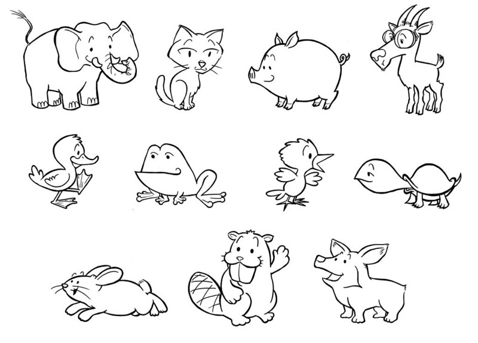

As you may know, no super hero is a hero without some sort of super power or ablity, and I am no exception, and mine happens to be one of the strongest and coolest there is. I have the amazing power to call any animal in my vicinity, be it wildlife, insects, or even aquatic life to my aid! But, don't get it twisted! My power is animal calling, not animal controlling. I can't control what animal I call, and when I do call them I have no control over what they do. So basically, all I can do is summon whatever is in the vicinity, and hope that its a useful animal who is also willing to help me out. Ive heard many people refer to my ability as useless or unimpressive, and at that I scoff! Sure, its just a little bit random, and maybe more often than not I get a lazy housecat than an intimidating predator, but the way I see it, if I have no idea what im gonna get, neither does my enemy. Its amazing! And sometimes, I really do get something amazing, like a wild WolfSnake, or a RhinoDuck. My powers really got me out of some tight pinches!
